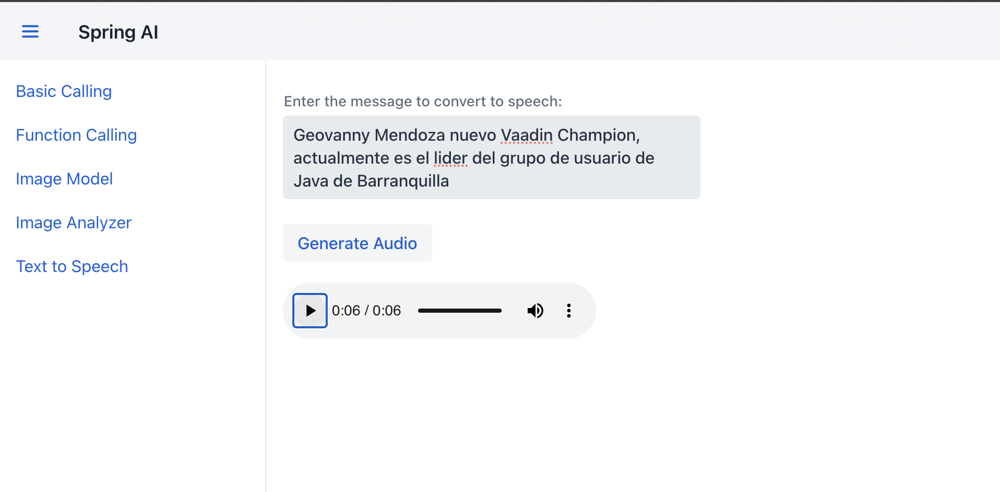

Text to Speech
Descripción del TTS (Text-to-Speech) en OpenAI con Spring AI
El uso de Text-to-Speech (TTS) en OpenAI, integrado con Spring AI, permite convertir texto a voz, generando archivos de audio a partir de mensajes escritos. Esta funcionalidad tiene un impacto significativo en aplicaciones donde la accesibilidad, la interacción con el usuario y la experiencia de usuario son esenciales. Con TTS, se pueden crear experiencias interactivas que benefician a usuarios con discapacidades visuales o aquellos que prefieren consumir información de manera auditiva.
Al integrar OpenAI TTS con Spring AI, se obtiene:
- Accesibilidad Mejorada: Proporciona opciones de accesibilidad para usuarios que tienen dificultades para leer texto.
- Interacción Natural: Facilita experiencias más humanas y naturales en aplicaciones interactivas, como asistentes virtuales o chatbots, al permitir respuestas en formato de voz.
- Aplicaciones Multimedia: Aumenta el alcance de aplicaciones de entretenimiento, educación y productividad que requieren elementos de voz generados automáticamente.
- Multimodalidad: Complementa otras modalidades de IA, como la generación de texto o de imágenes, creando aplicaciones ricas en características multimedia.
Esta funcionalidad también simplifica el flujo de trabajo al automatizar la generación de audios, eliminando la necesidad de grabaciones manuales y permitiendo respuestas rápidas a mensajes personalizados. En conjunto, OpenAI y Spring AI facilitan la integración de modelos avanzados de IA en aplicaciones Java de una manera escalable y eficiente, convirtiendo texto en audio con solo unos pocos pasos y logrando una experiencia de usuario mucho más envolvente y accesible.
Paso 1: Controlador TtsController
Este controlador recibe un mensaje de texto como entrada y devuelve un archivo de audio MP3 generado a partir del mensaje.
- Línea 1
@RestController: Indica que esta clase es un controlador REST en Spring, lo que significa que sus métodos manejarán solicitudes HTTP y devolverán datos directamente en el cuerpo de la respuesta. - Línea 2
@RequestMapping("/tts"): Define el endpoint base para este controlador, que en este caso será /tts. - Línea 3
@RequiredArgsConstructor: Genera un constructor con los atributos finales (final), permitiendo la inyección de dependencias de manera automática. - Línea 6 Se inyecta
OpenAiAudioSpeechModel, una clase que maneja la interacción con el modelo de texto a voz de OpenAI. - Línea 8
@GetMapping(produces = MediaType.APPLICATION_OCTET_STREAM_VALUE): Define un endpoint de tipo GET que devuelve datos binarios (audio en formato MP3). - Línea 9
@RequestParam("message") String message: El parámetro message captura el texto que será convertido a voz.
OpenAiAudioSpeechOptions speechOptions = OpenAiAudioSpeechOptions.builder()
.withResponseFormat(OpenAiAudioApi.SpeechRequest.AudioResponseFormat.MP3)
.withVoice(OpenAiAudioApi.SpeechRequest.Voice.NOVA)
.withSpeed(1.0f)
.withModel(OpenAiAudioApi.TtsModel.TTS_1_HD.value)
.build();
-
Líneas 10-14 Configura las opciones para el modelo de texto a voz, incluyendo:
- Formato de respuesta en MP3.
- Voz seleccionada (
NOVA). - Velocidad de reproducción.
- Modelo específico de OpenAI para la síntesis de voz.
-
Línea 17
SpeechPrompt: Construye el mensaje que se enviará al modelo de texto a voz junto con las opciones configuradas. - Línea 18
penAiAudioSpeechModel.call(prompt): Realiza la llamada al modelo para obtener la respuesta de voz generada.
-
Extrae el contenido de audio generado en forma de arreglo de bytes.
-
Línea 22
ResponseEntity: Devuelve la respuesta HTTP, estableciendo el tipo de contenido comoAPPLICATION_OCTET_STREAMy adjuntando el archivo con el nombretts_audio.mp3. - Línea 25
responseBytescontiene el archivo MP3 que se genera a partir del texto.
Paso 2: Integración en Vaadin TTS
Como se puede observar en la figura #1 esta vista permite al usuario introducir un mensaje de texto, convertirlo a voz y reproducir el audio generado directamente en la interfaz.

- Línea 1
@Route("text-to-speech"): Define la URL de acceso para esta vista en Vaadin. - Línea 2
@Menu: Etiqueta personalizada para integrar la vista en el menú. -
Línea 3
VerticalLayout: Utiliza un layout vertical para organizar los componentes. -
Línea 5
RestTemplate: Cliente HTTP que realiza llamadas al backend. -
Línea 6
backendUrl: Define la URL del endpoint del backend que genera el audio a partir de texto. -
Línea 7
setSizeFull(): Ajusta el layout para ocupar todo el espacio disponible. -
Línea 11
TextArea messageInput: Área de texto donde el usuario ingresa el mensaje a convertir. -
Línea 12
setWidth("400px"): Define el ancho del área de texto. -
Línea 14
Button generateAudioButton: Botón que inicia el proceso de generación de audio al hacer clic. -
Línea 17
HtmlComponent audioPlayer: Componente HTML para reproducir el archivo de audio generado. -
Línea 18
setAttribute("controls", true): Añade controles de reproducción como play, pause y volumen al componente de audio. -
Línea 20
generateAudioButton.addClickListener: Asigna una acción al botón para enviar el mensaje al backend. -
Línea 22 Construye la URL para hacer la solicitud GET al backend, incluyendo el mensaje como parámetro.
-
Línea 25
restTemplate.exchange: Realiza la solicitud HTTP GET al backend y espera un arreglo de bytes como respuesta (el audio en MP3). -
Línea 32 Verifica si la solicitud fue exitosa y si contiene datos.
-
Línea 33 Crea un
StreamResourcea partir de los bytes de audio recibidos y establece la fuente delaudioPlayercon este recurso para que pueda reproducirse. -
Línea 37 Muestra una notificación de error si falla la generación del audio o si ocurre una excepción.
-
Línea 44 Añade los componentes al layout en el orden deseado para que se muestren en la vista.
Resumen
La funcionalidad de Text-to-Speech (TTS) integrada en el proyecto permite convertir texto en audio usando OpenAI y Spring AI. Esta funcionalidad, que emplea el modelo de voz de OpenAI, toma un mensaje de texto proporcionado por el usuario, lo procesa a través del modelo de TTS de OpenAI y devuelve un archivo de audio en formato MP3 que representa el mensaje hablado.